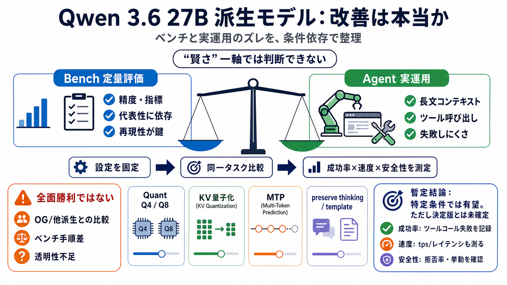

COVER
02 / 14
効率と実運用のズレ
Qwen 3.6
27B
派生
「派生モデルの推論・エージェント適性は本当に改善したのか」を、ベンチと実運用の両方から整理します。
注目
長コンテキスト＋ツール呼び出し（Hermes agent）
論点
量子化 / KV量子化 / MTP / preserve thinking で結果が変わる
読み方：各スライドは「主張→根拠の種類→条件依存」を1メッセージでまとめています。
PROBLEM
03 / 14
改善は“二種類”
ベンチと現場
モデル改善の主張は、
定量評価（ベンチ）
と
実運用評価（エージェント成功率など）
の2系統に分かれます。
定量（Bench）
タスク精度・指標の比較（ただし評価の代表性に左右される）
実運用（Agent）
長文コンテキスト、ツール呼び出し、エラー回復での“失敗しにくさ”
この投稿は「ベンチだけでなく現場でも壊れていないか」を重視する流れです。
METAPHOR
04 / 14
性能＝一軸じゃない
“賢さ”以外
改善/不改善は「どれくらい賢いか」だけでなく、
どの設定で
、
どの行程が安定するか
で決まります。
量子化（Quant）
Q4/Q8などで性能や安定性の見え方が変わる
推論設定
unsloth設定、template、preserve thinking、MTP
KV量子化
Q4 KVなどで長文の挙動が変わり得る
“良くなった”は環境依存のサインでもあります。
EVIDENCE
05 / 14
現場での成功
Hermes
投稿では、Hermes agentが複雑なサイト操作（JS要素や罠あり）で、派生モデルが成功しやすかったと述べています。
比較の雰囲気
stockで10回→失敗2回、派生は失敗ツールコールなし（とされる）
重要な条件
LMStudio＋unslothの一般的設定を流用しつつ、量子化やKV設定が絡む可能性
ここでの“改善”は会話の上手さより、ワークフローの成立率に寄っています。
ARCHITECTURE
06 / 14
何が変わり得る？
推論の構造
派生モデルは、stockがしがちな挙動と異なり、推論ブロックでより“構造化したプラン”を作るよう観察されます。
仮説
計画生成が安定→ツール呼び出しが破綻しにくい→長文でも復帰しやすい
注意
主観的観察も含むため、「どのタスクで差が出るか」は未確定
“効率”は速度（tps）とセットで見ないと結論がズレます。
COMPARISON
07 / 14
全面勝利ではない
ベンチ
ベンチでは改善が見える一方で、regressionや「OG（他派生）でも同様」という反論もあり、一般化できません。
肯定側
ベンチでregressionなし、または精度改善があると報告
否定側
OG Qwen 3.6 27Bでも似た結果が出る可能性
原因候補
ベンチ種別・評価手順の違いで結論が変わる
結論の鍵は「条件を揃えた再現性」です。
DISTINCTION
08 / 14
MTPが壁になる
速度/成功率
MTP（acceptance rateの話）は、成功率を上げる一方でオーバーヘッドで遅くなる可能性があり、最適点が必要です。
論点
acceptanceが高ければ得を相殺できるかもしれないが、速度低下や再試行が支配し得る
未確定
「acceptance率はどれくらいなら得か」「成立条件」が環境依存で整理不足
例：MTPでtpsが大きく下がった、という体験談が併存します。
PROCESS
09 / 14
確認すべき設定
固定条件
再現性を上げるには、推論設定（template/保ちながら扱う内部表現）や量子化・KV・速度指標を固定して比較する必要があります。
i
同一タスクでstockと派生を厳密比較（ツール呼び出し失敗・クラッシュも記録）
ii
速度も同時測定（tps/レイテンシ）し、MTPの得失を定量化
iii
template冒頭でpreserve thinking等のフラグ、量子化（Q4/Q8/KV Q4）を固定
“賢いか”だけでなく“失敗しにくいか”を指標にします。
DISTINCTION
10 / 14
安全性も同じではない
拒否率
「uncensored」表記でも、拒否率や挙動が一致しない場合があり、拒否・エスケープ耐性は設定や検証プロンプトで変わり得ます。
矛盾の例
拒否率が高いという検証報告と、「自分は拒否がなかった」という報告が併存
影響要因
推論テンプレ、システムメッセージ、量子化、MTPなど
性能だけで導入判断すると、実運用リスクが残ります。
EVIDENCE
11 / 14
なぜ良くなった？
透明性
多段マージや学習の詳細は語られても、RLの有無や目的が不明確だと「改善メカニズム」の確信が持てません。
分かること
モデルカードに訓練データ/マージの概要がある（とされる）
足りないこと
エージェント能力を学習（RL）したのか、どこがボトルネックだったのか
説明が弱いと、「再現可能な知見」になりにくいです。
TAKEAWAY
12 / 14
暫定結論
有望
「特定条件では派生が有望」だが、「万人にとっての決定版」はまだ言えない、という立場が妥当です（前提：条件依存が大きい）。
Practical（実用）
ツール呼び出しの成立率が指標になっている点は強い
Skeptical（懐疑）
OG/他派生で同傾向の可能性、再現性が未確定
Technological（技術）
quant/KV/MTP/preserve thinkingで結果が変わるため切り分け必須
次に必要なのは「成功率×速度×安全性」を揃えた比較です。
CLOSING
13 / 14
あなたの手元で
検証手順
導入判断のために、stockとの同一条件比較、成功率とtpsの両方の測定、テンプレ/MTP/thinking設定の固定、拒否率の確認を推奨します。
必須
同一タスク×同一設定で比較／失敗理由（ツールコール、例外）を記録
安全
uncensored表記の前提に頼らず、拒否率と挙動を実プロンプトで確認
References（情報源の種類） ：投稿スレでのベンチ報告、実運用体験（Hermes/ツール呼び出し）、MTP・preserve thinking・quant/KVに関する議論。 ※元記事やスレのURLは提示されていないため、ここでは論点のカテゴリとして整理しています。
REFERENCES
14 / 14
References
No references found